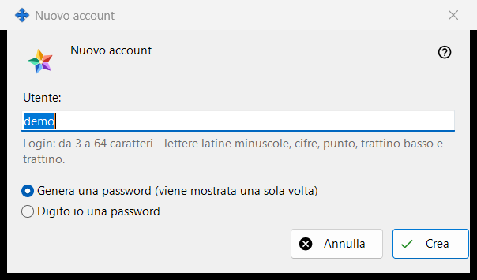
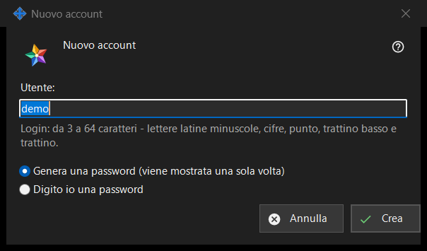

Nuovo account
Scopo
Una finestra con due modalità. «Nuovo account» aggiunge un account al Media Exchange Server che gestisci; «Reimposta password: <login>» assegna una nuova password a un account esistente. Si aprono da «Aggiungi un account..» e «Reimposta password..» sotto l'elenco degli account nella pagina Media Exchange Server delle impostazioni di Share Manager; per reimpostare serve un account selezionato.


In questo ordine
- Nella modalità di aggiunta scrivi il login.
- Scegli come viene creata la password.
- Nella modalità di reimpostazione decidi se disconnettere tutti i dispositivi dell'account.
- Premi «Crea» o «Reimposta».
- Copia la password generata dalla finestra successiva, oppure scrivine una tua.
Gli elementi
Dichiarazione per il primo account
Al primo account in assoluto la finestra inizia con «Prima di creare il primo account, leggi che cosa può vedere l'operatore del server:» e un riquadro di sola lettura con la dichiarazione. Gli account successivi e le reimpostazioni non la mostrano.
Login
Solo nella modalità di aggiunta. Da 3 a 64 caratteri: lettere latine minuscole, cifre, punto, trattino basso e trattino; le maiuscole vengono convertite in minuscole. Il suggerimento diventa del colore di avviso finché il testo non può essere un login, e «Crea» non procede finché non lo diventa.
Come viene creata la password
«Genera una password (viene mostrata una sola volta)» è la scelta predefinita: il programma crea una password casuale che rispetta le regole e la finestra successiva la mostra una sola volta. «Digito io una password» apre la finestra «Password dell'account», dove una riga in tempo reale indica che cosa manca: almeno 10 caratteri con una lettera latina maiuscola, una minuscola e una cifra.
Disconnettere tutti i dispositivi
Solo nella modalità di reimpostazione. «Disconnetti subito anche tutti i dispositivi di questo account» è spuntata per impostazione predefinita. La riga del risultato segnala allora che la password è cambiata e che tutti i dispositivi dell'account sono disconnessi; senza la spunta segnala solo che la password è cambiata.
Dopo l'accettazione da parte del server
La riga del risultato segnala che l'account è creato. Una password generata compare una sola volta in una finestra propria con «Copia password» e «Imposta una password personale..», che torna alla reimpostazione con la scelta «Digito io una password». Con «Conserva le password degli account su questo PC» attivo, la password viene salvata anche su questo PC e l'account ottiene «Mostra password..». Se questa build offre le funzioni client dello scambio e questo PC non ha un account proprio, vi accede come primo dispositivo dell'account con questa password.
Impostazioni del gestore · Impostazioni condivisione SFTP · Impostazioni server di scambio